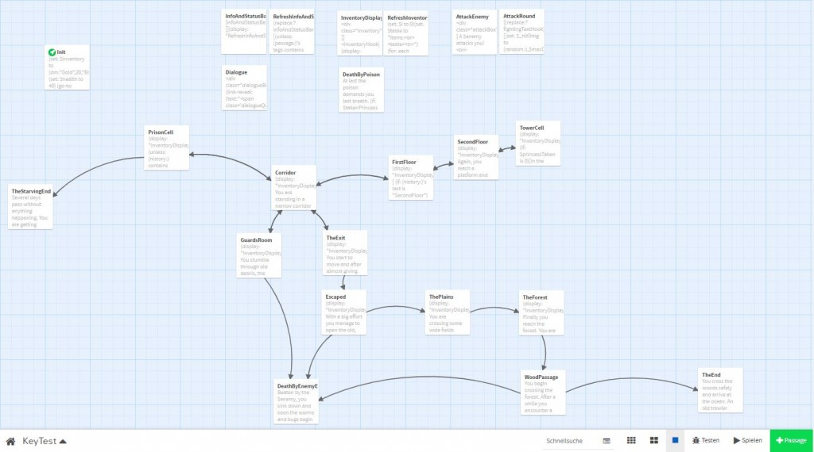
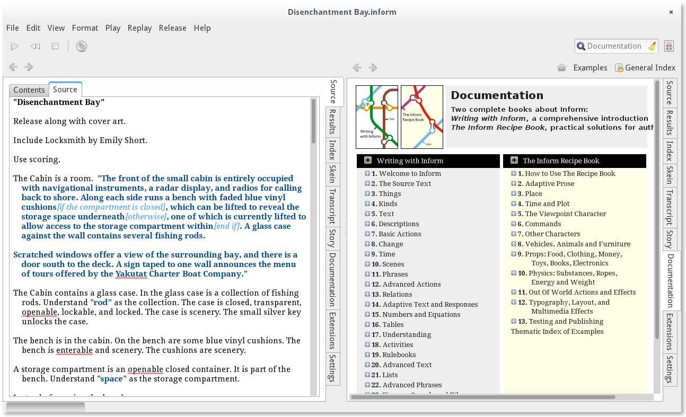
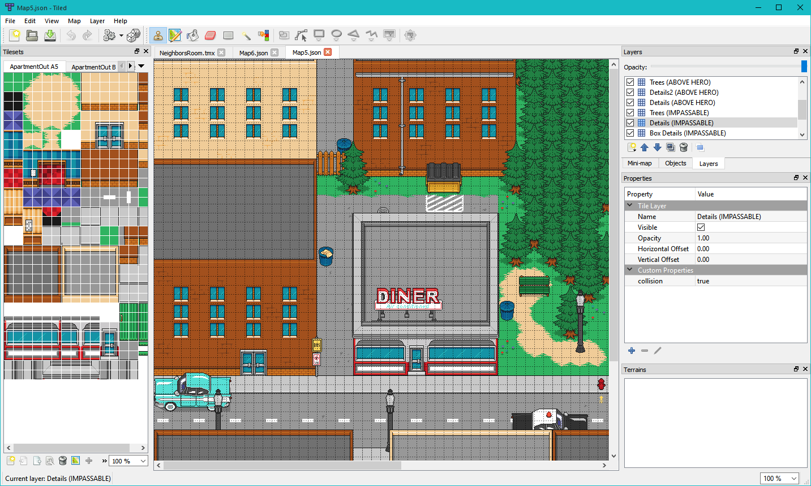
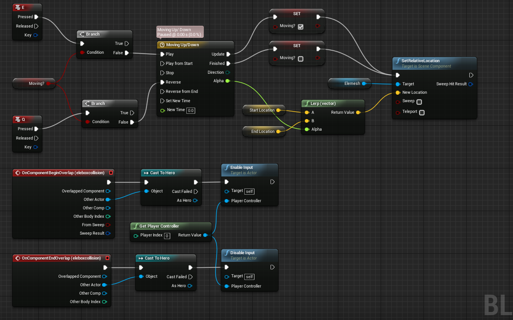
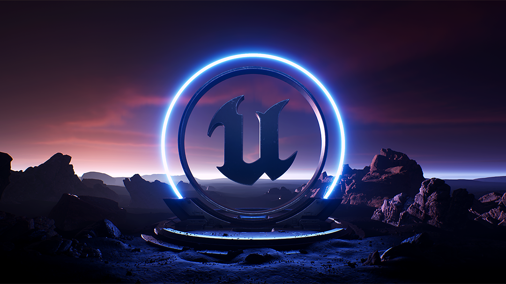

Today’s agenda — Game Engines (logistics for our next projects), Playtesting the Anticipation project, and a current-issue announcement.
The engine-pivot session: a survey of what game engines are, a Unity-vs-Unreal philosophy comparison, and the announcement that the class will be moving to Unreal for the second half of the semester. Includes the playtest of the Anticipation project and a discussion of the USC federal compact issue.
Playtesting — it’s important
Playtesting the Anticipation project today.
Game Engines — logistics for our next projects
What is a game engine? It’s software that gives you a framework for making games.
Modern engines usually have two parts:
- The engine itself — a library of code that you can talk to from scripts to tell it what to do.
- A visual editor where you can assemble your assets (sounds, models, sprites, etc.).
Specialized engines
Some engines are highly specialized.

Twine makes it easy to write interactive text stories, but hard to make any other type of game.
Photopia was written in Inform, a game engine that specializes in parser-based text adventures.
RPGMaker has special tools for making role-playing games, like inventory, maps, and skill trees. It’s more flexible than Twine or Inform, but it still has very specific constraints.General-purpose engines — Unity and Unreal
Unity and Unreal are both general-purpose engines. They take care of common things that many kinds of games need to do, like:
- Simulating physics, including collisions
- Drawing stuff onto the screen (rendering)
- Processing input from gamepads, mouse, etc.
They’re both capable of producing pretty much the same wide variety of games.
Unreal vs Unity — the philosophy difference
The distinct “look” of each engine isn’t so much a constraint as it is an expression of how they prioritize different workflows differently. If your priorities line up with the engine’s, then it will be easier to produce your game.
Unity — minimal assumptions
Unity doesn’t make a lot of assumptions about the kind of game you want to make.
- You probably want some kind of 3D world.
- Default lighting is basic.
- Default textures are limited.
- No character controllers, camera effects, AI, rich text engine, atmospherics, etc.
- Robust ecosystem to add that stuff.
Unreal — specialized toward AAA conventions
Unreal Engine is more specialized toward a certain style of game:
- You probably want a first- or third-person character controller that can walk, run, jump, and shoot a gun.
- You probably want an aesthetic in line with modern AAA standards: dynamic lighting, global illumination, camera post-processing, all included.
- You probably want AI agents that can pathfind on a navmesh, so that’s ready to go.
Blueprints

Unreal Blueprints visual scripting.Blueprint makes it really, really easy to do some very common, very useful things.
There are a few things it is much harder to do in visual scripting. (Like copy & paste.) And there are a lot of things Blueprints are just not really capable of doing; you have to do them in C++.
“The expectation is that gameplay programmers will set up base classes which expose a useful set of functions and properties that Blueprints made from those base classes can use and extend upon.”
— Unreal Engine Documentation, https://docs.unrealengine.com/4.26/en-US/ProgrammingAndScripting/Blueprints/Overview
The bottom line
If you’re doing what Unreal expects you to do, then it’s easier to learn and use Unreal. If you’re doing anything outside of what Unreal expects you to do, then it’s much easier to learn and use Unity.
System requirements

Unreal Engine is more demanding than Unity. You might be able to run it on a desktop computer, but you could run into difficulties running it on a laptop that isn’t a relatively high-end gaming machine.
Installing Unreal Editor
To install Unreal Editor on your own machine, you’ll need to download the Epic Games Launcher. On the left-hand side of the launcher there is a button for Unreal Engine.
In the Unreal Engine section, click the Library tab at the top of the screen. You can click the plus button next to Engine Versions to install Unreal Engine onto your computer, and then click the Launch button in the upper right to launch it after it installs.
I recommend you install version 5.6, since that is [close to] what is available on the SCA computers. After you add a new engine version to the launcher, but before you press the button to install it, you can click the engine version number to access a dropdown of all available versions.
Lab access
You can access Unreal Engine on computers in classrooms (especially this one and SCI 206) when there aren’t classes going on.
Remote Labs — for laptops that can’t run Unreal
If you don’t have access to a computer that can run Unreal, your best option is to use the computers available through SCA Remote Labs. You can connect to these computers over the internet and work virtually.
- Download the HP Anyware (PCoIP) Client and install it on your computer.
- Go to the SCA Remote Labs website and sign in using your NetID credentials.
- Under Reservation Management → Reserve Now, make a reservation for either a High Performance 3D or HP Workstation computer.
- In the HP Anyware client, set up a connection to
remotelab.sca.usc.eduand connect, again using your NetID credentials. If the connection fails, you might need to wait a moment and try again.
Assignment
W08-Assignment - Prepare for Unreal Development
Assignment — Reading
Watch a video from GDC, from a list that I will provide and link here.
Play Papo y Yo, available on Steam ($15). Please play it rather than watching a video. You are welcome to play it together with another student.
We will discuss both the videos and the game on Thursday, October 15.
Project Preview
Your next project will be an Unreal tutorial (a specific one that I will provide) plus a small extension. It will be due Tuesday, October 20.
This is why you will want to sort out how you will use Unreal this week.
See You Next Time
No class on Thursday and no project this week. Enjoy your Fall Recess!